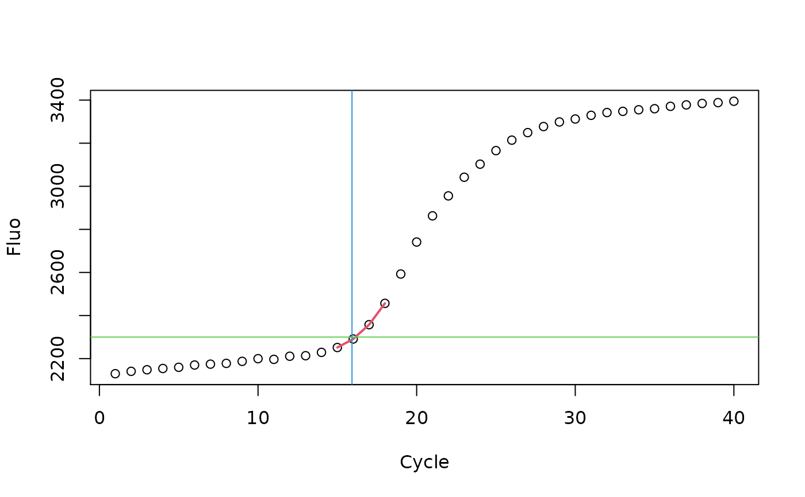
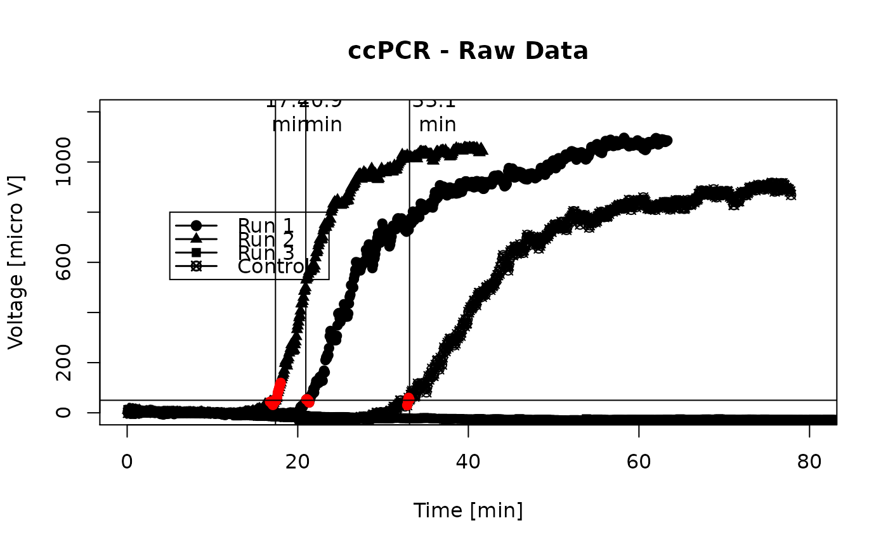

th.cyc.Rdth.cyc calculates the number of cycles at which the
fluorescence exceeds a defined threshold, called the threshold cycle (Ct).
According to the MIQE guidelines the Ct is referred to as quantification
cycle (Cq). The calculated Cq is a relative value, which depends on the
template copy number, instrument, reagents, amplification efficiency and
probe technology. Low Cqs correlate with high quantities template copy
numbers. Real-time technologies enable the quantification of nucleic acids
by calculation of specific curve parameters like the quantification point
(Cq) and the amplification efficiency (AE) based on the kinetics of the
amplification curve. The Cq represents the number of cycles (time for qIA)
needed to reach a defined fluorescence signal level in the exponential
phase of the amplification curve. The Cq can be determined from a fixed
threshold value or by various analytical algorithm as described elsewhere
(Bustin et al. 2009, Ruijter et al. 2013, Tellinghuisen et al. 2014).
th.cyc(x, y, r = 2500, auto = FALSE, linear = TRUE)
| x | is a vector containing the time or cycle values. |
|---|---|
| y | is a vector containing the fluorescence values. |
| r | a fluorescence value which defines the threshold. |
| auto | is logical parameter which indicates if an automatic estimation of the threshold should be used (Note: Experimental, not safe to use). |
| linear | is logical parameter which indicates if a linear or quadratic regression should be used for the calculation. (Note: Experimental, not safe to use). |
An object of class th.
The Threshold Cycle (Ct) (Cq according to MIQE, see Bustin et al. 2009) is
the cycle number at which the fluorescence exceeds significantly a point
above the baseline and defined threshold in a particular samples. Thus the
Ct is the cycle when sufficient numbers of amplicons have accumulated. The
th.cyc calculates the intersection of the user defined Ct value
(r) and a linear regression or quadratic polynomial in the range of
the user defined Ct value. In contrast to other methods,
th.cyc have no requirement to fit a "complex" non linear model to
the entire data set but rather focuses on the specific area. The polynomial
is calculated from four neighbor values at the fluorescence threshold.
Stephen A. Bustin, Vladimir Benes, Jeremy A. Garson, Jan Hellemans, Jim Huggett, Mikael Kubista, Reinhold Mueller, Tania Nolan, Michael W. Pfaffl, Gregory L. Shipley, Jo Vandesompele, and Carl T. Wittwer. (Apr 2009). "The MIQE Guidelines: Minimum Information for Publication of Quantitative Real-Time PCR Experiments". Clin Chem. 55 (4):611--22. doi:10.1373/clinchem.2008.112797. PMID 19246619
Ruijter, J.M., Pfaffl, M.W., Zhao, S., Spiess, A.N., Boggy, G., Blom, J., Rutledge, R.G., Sisti, D., Lievens, A., De Preter, K., Derveaux, S., Hellemans, J., Vandesompele, J.: Evaluation of qPCR curve analysis methods for reliable biomarker discovery: bias, resolution, precision, and implications. Methods (San Diego, Calif.) 59(1), 32--46 (2013). doi:10.1016/j.ymeth.2012.08.011. PMID: 22975077
Tellinghuisen, J., Spiess, A.-N.: Comparing real-time quantitative polymerase chain reaction analysis methods for precision, linearity, and accuracy of estimating amplification efficiency. Analytical Biochemistry 449, 76--82 (2014). doi:10.1016/j.ab.2013.12.020. PMID: 24365068
Stefan Roediger, Michal Burdukiewicz
# First example # Raw data from the VIMCFX96_69 data set. # Cycles x <- VIMCFX96_69[, 1] # Fluoresce values y <- VIMCFX96_69[, 2] # Plot the raw data plot(x, y, xlab = "Cycle", ylab = "Fluo")# Second example # Application of the th.cyc method to determine the Cq from a continous # amplification reaction. plot(NA, NA, xlim = c(0,80), ylim = c(0,1200), xlab = "Time [min]", ylab = "Voltage [micro V]", main = "ccPCR - Raw Data")# Threshold level "r" (50 micro Volts) for (i in c(1,3,5,7)) { y.tmp <- capillaryPCR[, i + 1] - mean(capillaryPCR[1L:150, i + 1]) Ct.tmp <- th.cyc(capillaryPCR[, i], y.tmp, r = 50, linear = FALSE) abline(v = Ct.tmp[1]) text(Ct.tmp[1] * 1.1, 1200, paste(round(Ct.tmp[1], 1), "\nmin")) lines(capillaryPCR[, i], y.tmp, type = "b", pch = 20 - i) points(Ct.tmp@input, col = "red", pch = 19) }